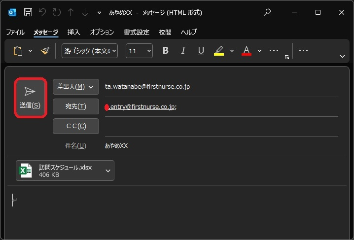
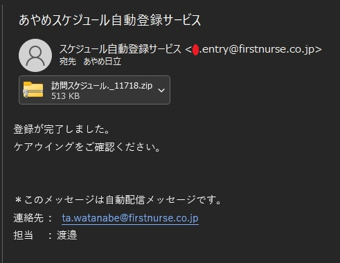

スケジュール自動登録サービスマニュアル
目次
- 1. 利用方法・流れ
- 2. 訪問スケジュールの記載方法
- 3. メールの送付方法・流れ
- 4. 担当者・利用者IDの検索方法
- 5. 注意事項
- 6. エラーメッセージがメールで送付された場合について
- 7. 連絡先
1.利用方法・流れ
- 以降の項目に記載されているルールで作成したで訪問スケジュールを、受付用のメールアドレス(a.entry@firstnurse.co.jp)に送付する。
- 正常にメールが受信された場合は、受付完了メールが送付されます。
- 数十分から一時間ほどで登録が完了します。
- 完了通知メールと共に利用者配布用の訪問予定表が返送されます。
2.訪問スケジュールの記載方法
本サービスを使用するにあたって、既存の訪問スケジュールは使用できません。
配布する新しいフォーマットの訪問スケジュール表を使用してください。
また、スケジュールを記載する際に下記の通り記載頂くことで、自動的にケアウイングに反映されます。
シート名の記載について
登録したいシート名は送付日から起算した翌週月曜日の日付として下さい。また、半角で記載して下さい。(記載例:2023/08/21 -> 8.21)

担当者の記載について
利用者名の後にケアウイングの利用者ID(※1)を記載

利用者者の記載について
利用者名の後にケアウイングの利用者ID(※1)を記載
（利用者には、お手数ですが数字の前に必ず"ID"を付けて下さい）

時刻の記載について
開始時刻を入力して下さい。終了時刻に関しては記入いただかなくても結構です。

二人対応時の記載について
メイン対応の利用者名の下に「"★"」を入力して下さい。
入力する際は「ほし」と入力して候補に表示される「黒星」を選択して下さい。
一般訪問看護指示書で入る場合の記載について
名前の下に「"一般"」と記載して下さい。また一般訪問看護指示書かつ二人対応の場合は、と組み合わせて"★一般"と記載することも出来ます。
3.メールの送付方法・流れ
受付用のメールアドレス(a.entry@firstnurse.co.jp)にメールを送付する際の流れは下記の通りとなります。
- Outlookを開き、新規メールを作成します。送付先は受付用のメールアドレス(a.entry@firstnurse.co.jp)とし、件名には「登録対象のステーション名(ex.あやめ熊谷)」を入力します。
詳細↓
- 作成した訪問スケジュールを添付します。
- 送信ボタンを押下し、メールを送信します。(本文は空で構いません。) 
- 受付が完了した場合、受付完了メールが届きます。
- 登録が終了次第、配布用スケジュールが添付された完了通知メールが届きます。 
- 配布用スケジュールを任意の場所に保存します。

保存したフォルダを開くと、PDFとエクセルファイルがあります。送付されたスケジュールに変更を加えたい場合はエクセルファイルを開き、再編集して下さい。不要な場合はPDFを開き印刷して下さい。

配布用スケジュールサンプル
居宅

施設

A4かつ横向きで印刷し、中央で切り取っていただくことでA5サイズの予定表となります。
施設用のシートを作成するためには、初回のみ施設の登録が必要となりますので、施設用のスケジュールを希望されるステーションはご連絡いただくか、アンケートに記載下さい.
居宅用のスケジュールの発行有無、施設用と個人用のスケジュールの発行有無などは別途設定が出来ます。希望されるステーションはご連絡いただくか、アンケートに記載下さい.
4.担当者・利用者IDの検索方法
利用者ID
- ケアウイングの利用者管理のタブを開き、ID列の番号を確認します.
ex.下記の田中菖蒲さんの場合は、IDは20となります.
担当者ID
- ケアウイングの利用者管理のタブを開き、ID列の番号を確認します.
ex.下記のあやめ太郎さんの場合は、IDは1となります.
point 一覧を開き、「ソートと検索」ボタンを押下することで、名前の検索をすることが出来ます.
5.注意事項
姓(名)が変更となった場合の対応について
従業員または、利用者の性(名)が変更となった場合、自動での更新はしておりません。お手数ではございますがご連絡下さい.
従業員または利用者の増加については自動で更新しておりますので、ご連絡は不要となります.
住所が変更となった場合の対応について
自動で変更が行われないため、こちらについてもご連絡下さい.
上記２項については、今後、より簡略化できるように改善致します.
精神療養費Ⅲの適用条件について
同一日に同一住所への訪問が複数ある場合、自動的に精神療養費Ⅲを適用しています.
本サービスが取得する住所は、**ケアウイングに登録の住所**となります。本来、精神療養費Ⅲが適用されるべき箇所において、精神療養費Ⅰとなっている場合は、データの修正が必要となるため、ご連絡下さい.
登録されている住所に、部屋番号が入っている場合は高確率で精神療養費Ⅰとなってしまいます。お手数ではございますが、アンケートに記載いただくか、ご連絡下さい.
(ex.”A市B町XX-XX アパートC 101”の利用者、”A市B町XX-XX アパートC 102”のような住所の利用者がいるステーションは特にご注意下さい.)
6.エラーメッセージがメールで送付された場合について
本サービスの処理中に何らかのエラーが発生した場合、送付元にエラーメッセージが返されることがございます.
例えば下の画像は添付ファイルを添付しなかった際のエラーです.
＊エラー内容は担当者にも送付されています.
7.連絡先
アドレス: ta.watanabe@firstnurse.co.jp
担当: 渡邉